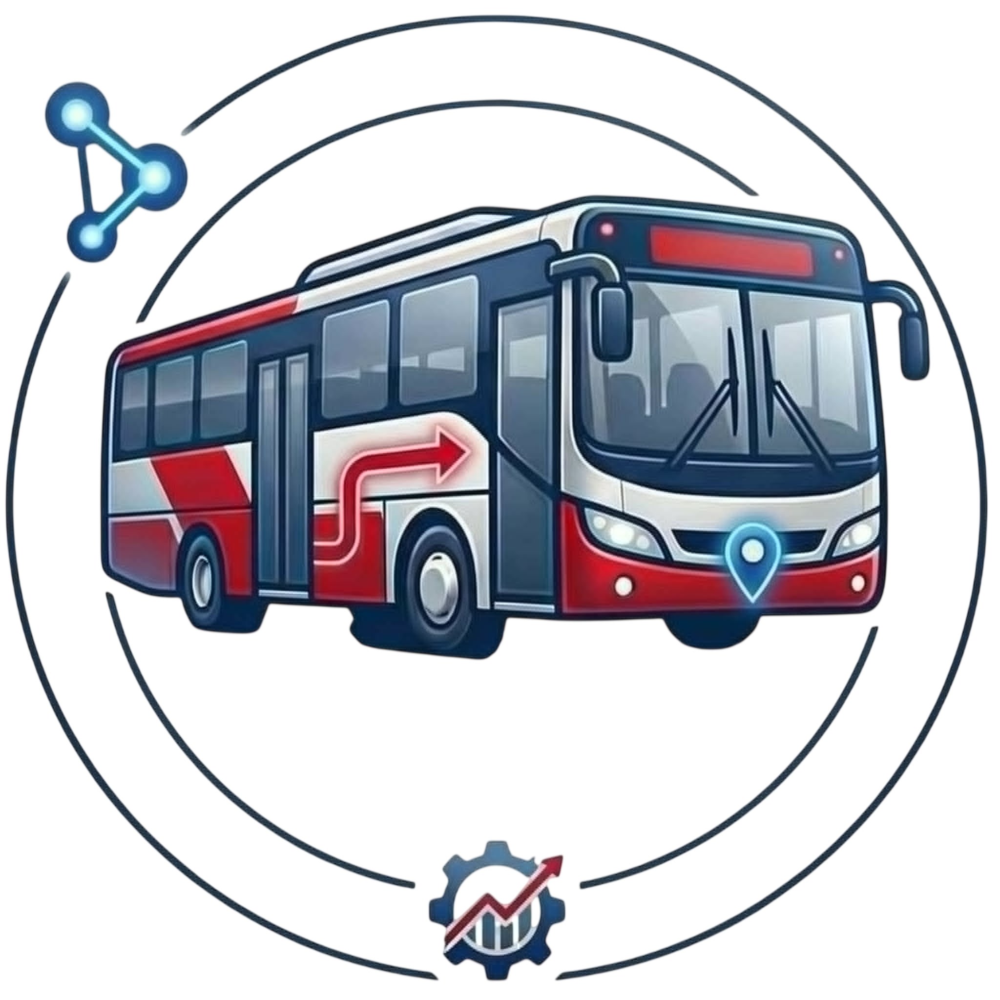

QCommute
Loading . . .
Loading . . .

Quezon City
Waiting for location
Choose an emergency type
Quezon City Conductor Portal
Version 1.0.0QCommute Conductor Portal enables bus conductors to manage line trips, track boardings and alightings in real time via manual counter or AI doorway scanner, broadcast emergency SOS alerts, and provide live occupancy updates to Quezon City commuters.
© 2026 Quezon City Government